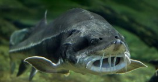
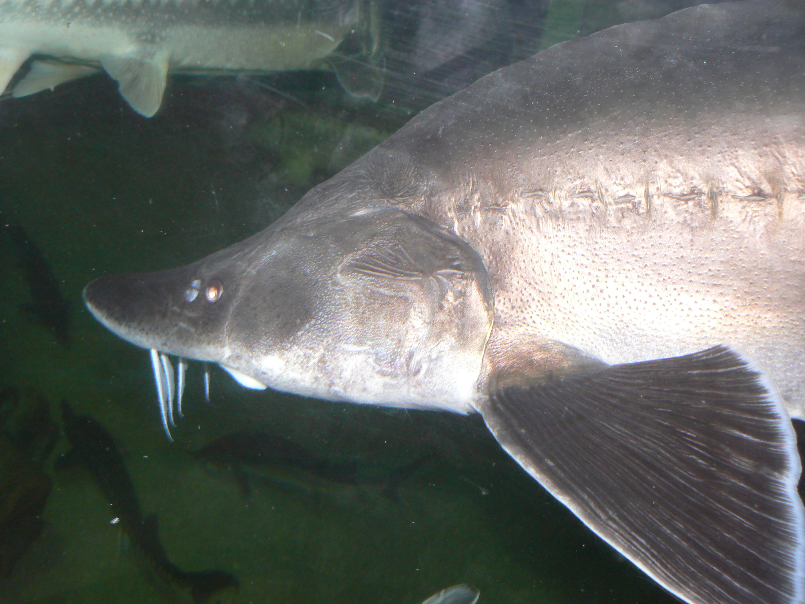
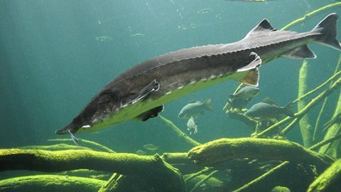

Durata de viata: Pana la 100 ani
Unde traieste (mediu de viata): Ape dulci,semi-sarate,rauri,ape sarate
Dieta: Carnivor
Clasa: Actinopterigienii
Nume stiintific: Huso huso
Ce mananca (mancarea principala): Pesti,crustacei,moluste
Predatori: Oameni
IUCN (International Union for Conservation of Nature) clasifica acest peste ca unul pe cale de disparitie. Morunul este o specie protejata, listata in anexa 3 a conventiei de la Berna, iar comertul cu acest peste este strict interzis. Din anul 2005 Statele Unite ale Americii a interzis orice import al speciei pe teritoriul sau. Caviarul Beluga, format din oua negre de sturion, constituie unul dintre cele mai apreciate alimente de lux si cea mai scumpa marfa alimentara de origine animala din lume.
Asta desi, in ultimul deceniu, pescuitul de sturioni a fost interzis, iar in Dunare au fost lansate sute de mii de exemplare. De vina sunt braconierii, dar si conditiile neprielnice inmultirii si supravietuirii, asa ca efectivele de sturioni raman extrem de scazute. Cercetatorii incearca sa studieze exact situatia si sa gaseasca solutii.
Cu ocazia Zilei Dunarii de anul acesta, sarbatorita pe 29 iunie, compania Apa Nova, filiera a Veolia, a achizitonat si eliberat in Dunare 1.000 de pui de pastruga, pentru a sustine populatia de sturioni salbatici din acest an. Potrivit lui Radu Suciu, cercetator in cadrul Institutului National de Cercetare Dezvoltare Delta Dunarii Tulcea, repopularea sturionilor este absolut necesara in conditiile in care Guvernul a oprit acum trei ani programul de repopulare, din lipsa de fonduri.
Radu Suciu: Noi am avut in Dunare sase specii de sturion, acum mai sunt patru, care sunt inca intr-o stare acceptabila. Cel mai periclitat este nisetrul. Sunt ani in care se prind doar cateva exemplare. In 2007 s-au prins numai masculi, atunci am fost nevoiti sa folosim pesti din 2006 pentru reproducere. E o situatie critica. Este incurajator ca am reinceput acest program de redresare, nu este prea tarziu. Nu suntem ca Fran?a sau Germania unde a disparut complet nisetrul din fluvii. Atat au pescuit pana n-a mai existat deloc. Noi ne-am oprit la timp si am implementat acest program de sustinere tocmai ca sa construim generatiile care sunt slabe si nu pot suporta pescuitul industrial. Adica nu vin destui pesti ca sa poti si sa prinzi, sa faci comert cu ei si sa ramana si pesti care sa se reproduca.
La celelalte specii se vede un oarecare efect al acestui moratoriu. De exemplu, in acest an, monitorizarea morunilor se afla in a cincea zi. Colegii mei au capturat deja peste 100 de exemplare de pui de moruni care s-au nascut in Dunare. Ii prind, ii marcheaza, ii fotografiaza, iau probe de tesut pentru studiul nostru de genetica populatiilor, si, dupa cum se observa dupa aceste cinci zile, 2013 a fost un an cu o reproducere buna la morun. La celelalte specii nu stiu, urmeaza sa aflam.
Curiozitati:
- Morunul este cel mai mare peste de apa dulce din lume.
- Cel mai mare morun prins vreodata cantarea 1.572 kg si avea 7.2 m.
- Culoarea variaza dupa mediu: cei din Dunare cenusii mai deschis, cei din mare mai inchisi. 
- In combinatie cu nisetrul, pastruga si viza reies hibrizi.
- Cel mai mare exemplar de Morun este considerata o femela capturata in raul Volga in 1827 care a cantarit 1571 de kilograme si a masurat 7.2 m lungime.
- In Delta s-a prins un morun de 675 kg,din burta caruia s-au scos 145 kg icre.
- Puii de morun se indreapta catre mare in lunile iunie-septembrie, inotand incet pe fundul apei, oprindu-se din cand in cand sa se hraneasca.
- Are valoare economica foarte mare si este pescuit pentru carnea gustoasa si icrele negre.
- Originea cuvantului Huso nu e lamurita; unii deriva acest nume de la cuvantul turcesc usun = lung, altii de la cel unguresc husos = carnos sau din latina huso = porc.